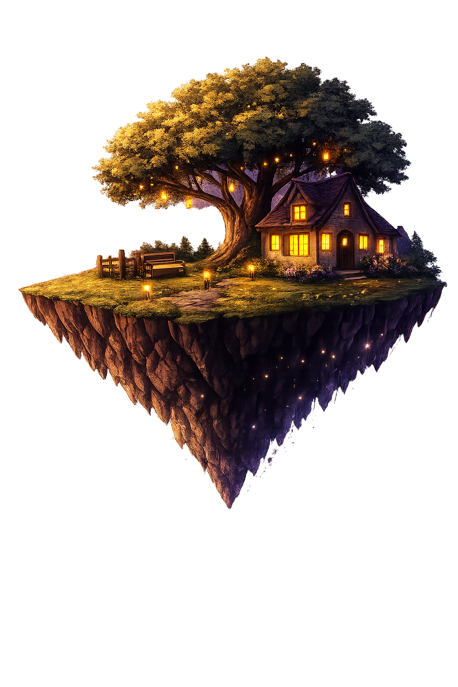

Acolhimento
Criamos espaços onde todos possam se sentir respeitados, compreendidos e acolhidos.
A Mente Viva nasceu do desejo de transformar informação, acolhimento e tecnologia em um lugar onde crianças, adolescentes e famílias possam encontrar apoio para cuidar da saúde mental.

Acreditamos que toda criança e todo adolescente merece crescer sabendo que suas emoções são importantes, que suas dúvidas podem ser compartilhadas e que pedir ajuda nunca deve ser motivo de vergonha.
A Mente Viva nasceu com o propósito de transformar conhecimento em acolhimento. Mais do que oferecer informações sobre saúde mental, buscamos criar um ambiente onde aprender, conversar e encontrar apoio façam parte da mesma experiência.
Nossa missão é incentivar o desenvolvimento emocional desde cedo, fortalecendo a autoestima, o autoconhecimento e as relações humanas.
Criamos espaços onde todos possam se sentir respeitados, compreendidos e acolhidos.
Transformamos informações complexas em conteúdos simples, acessíveis e responsáveis.
Incentivamos o autoconhecimento e o crescimento emocional em cada fase da vida.
Promovemos ambientes seguros para compartilhar experiências e construir relações saudáveis.
Valorizamos a privacidade, a moderação e o cuidado em cada espaço da plataforma.
Acreditamos que pequenas atitudes podem transformar vidas e criar novos caminhos.
Cada integrante contribuiu com seu talento, dedicação e visão para transformar uma ideia em um espaço de acolhimento, aprendizado e cuidado.

Responsável pelo desenvolvimento da plataforma, identidade visual, arquitetura do sistema e experiência do usuário.

Responsável pela comunicação e apresentação do projeto, conectando as ideias da Mente Viva ao público.

Responsável pela apresentação e apoio na comunicação do projeto, contribuindo para transmitir a proposta com clareza.

Responsável pela apresentação e construção da narrativa durante a exposição, ajudando a transformar ideias em mensagens acessíveis.

Responsável pela apresentação do projeto, colaborando na comunicação das ideias e na demonstração da proposta da Mente Viva.

Responsável pelo levantamento de informações, pesquisas e validação dos conteúdos utilizados no projeto.
A Mente Viva começou como uma ideia simples entre amigos e se transformou em um projeto com propósito real: criar um espaço digital seguro, bonito e acolhedor para falar sobre saúde mental.
Tudo começou com a vontade de criar algo que realmente pudesse ajudar pessoas.
Buscamos entender as necessidades reais de crianças, adolescentes e famílias.
Organizamos ideias, definimos objetivos e planejamos cada detalhe com cuidado.
Transformamos conceito, design e código em uma experiência acolhedora.
O projeto ganhou forma para impactar vidas e continuar evoluindo.
A Mente Viva nasceu como um projeto acadêmico, mas foi idealizada para mostrar como tecnologia, educação e cuidado podem caminhar juntos. Nosso objetivo é inspirar novas ideias, incentivar conversas sobre saúde mental e mostrar que ambientes digitais também podem acolher.